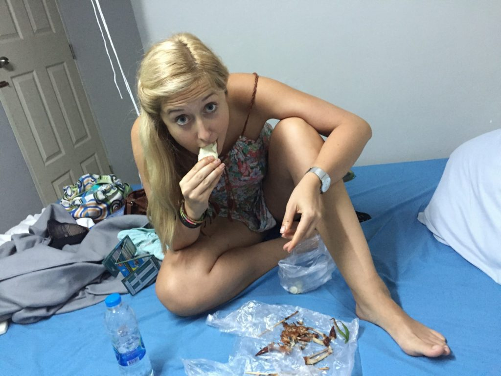

Ještě ne se pustíme dál, musíme se pochlubit, jak se taky dá večeřet. Abyste si nemysleli, 쬰 to všechno je o naleštěnejch fotkach a supr dupr romantice. Přinesl jsem jídlo na v칠캜u v igelitových pytlíkach a zhruba takle to dopadne, kdy na pokoji nemáte ani tal칤콏 游뗵

Dneska jsme si potřebovali zabalit, vyčlenit pár věcí, které s námi nebudou pokračovat po Asii, a stihnout bus v 18:00. Všechno se to povedlo….
Že chcete vědět víc? No dobře, tak jedem.
Ráno bylo asi nejhorší se rozhodnout, které všechny věci si chceme ulo쬴t na hostelu, abychom se s nimi nemuseli tahat po Asii. Hlavně šlo o teplé oblečení na Zéland a pohorky. Nejdřív jsme mysleli, 쬰 si tam schováme i no콘asy, ale nakonec jedou s náma. Snad tim sn칤쮂셠e šanci ztráty či zcizení.. Ta taška na nás bude čekat v takovym supr malým kumbálku plným různýho harampádí. Naštěstí zadarmo a samozřejmě bez jakýhokoliv papíru nebo potvrzení. Tak snad budou moje nový pohorky nějakýmu Thajci slušet…
{kind=link}

Po chvilce se nás naprosto nezištně ujala prodavačka beta rybiček a pokusila se vysvětlit různé zákeřnosti zdejšího jídla. Hlavně teda Lence objednala jídlo bez koriandru, čím nám oběma v podstatě zachránila celej den 游뗵 a já si dal trochu nasládlý rybí curry s nudlema (vlevo)
{kind=link}


Spokojeně najezení jsme se vydali směrem Chinatown. Kdy u máme místní SIM kartu, tak se sna쮂셠e pohybovat co nejvíce městskou hromadnou. Google mapy dok치쬺u hodně poradit. Akorát občas ten autobus na daný zastávce jede na druhou stranu. Nebo nejede vůbec. 游뗵 a to nás zrovna potkalo, tak쬰 jsme si nakonec vzali tuktuk místo chůze, abychom ušetřili trochu času, který by nám před odjezdem autobusu z Bangkoku mohl chybět.
{kind=link}

Zdejší Chinatown je vlastně docela nuda, proto쬰 se zas tak moc neliší od okolního Bangkoku. V takovym New Yorku je ten kontrast podstatně větší.


Zpátky na hostel se nám podařilo autobus ulovit. Jinak kdy u se to povede, tak je to důvod k oslavě 游뗵 jednak nemusíte dejchat všechny ty okolní smrady z vejfuků jako v tuktuku. A taky cestujete víc jako místní. A je to tak desetkrát levnější ne tuktuk.
{kind=link}
Paní na hostelu nás trochu vypekla. Chtěli jsme se před nocí strávenou v autobuse osprchovat, ale ne. Prej si to majitel nepřeje. Za to já bych přál milýmu majiteli sedět vedle mě za současný nemytý situace dvanáct hodin v busu. No nic, shit happens.
Teď u sedíme v autobusu směr ostrov Koh Phangan. Poštěstilo se nám oběma ulovit vlastní dvojsedadlo, tak snad u nebudem nabírat víc lidí. Odjezd se konal v 6pm, příjezd lodí na ostrov by měl být o 18 hodin později. Přejte nám 코콘astnou cestu bez zbytečných průjmů 游뗵 Jo a bus je ‚foreigners only‘. Nenapadá mě proč, ale aspo켿 se nemusíme tak mačkat, tak쬰 fajn. Jo ještě. Označili si nás nálepkama s cílovou destinací. My máme na tričku PNG. Asi L칠켿u trochu potrolim a nalepim jí tam jinej ostrov 游
Tak pa zejtra z pl치쬰.